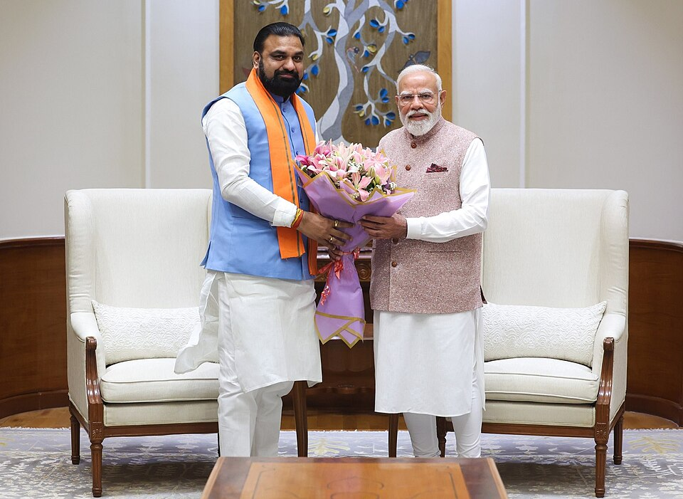
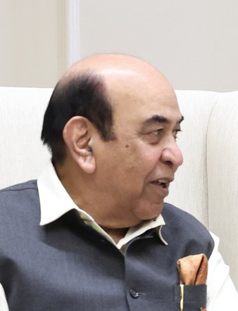
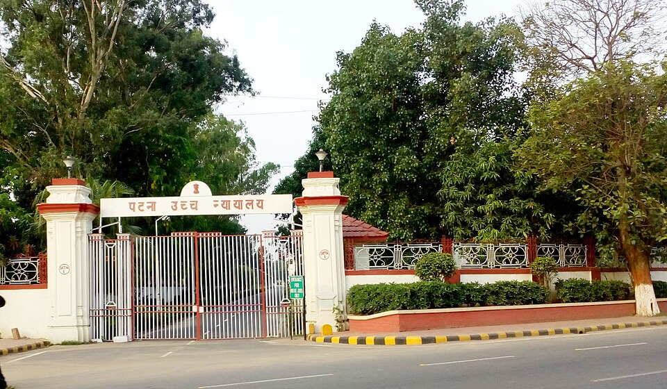
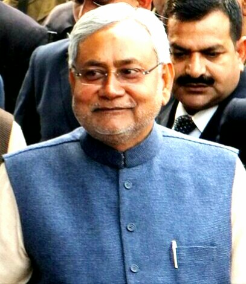

Bihar changed Chief Ministers in the exam window for the first time in ~20 years. Learn the date-chain cold — every link is a potential one-liner.
| Date | Event | Key Detail |
|---|---|---|
| 6 & 11 Nov 2025 | Assembly polls (2 phases); counting 14 Nov | NDA 202/243 (majority mark 122); record turnout 67.25%; BJP 89 (single-largest party for the first time), JD(U) 85, LJP(RV) 19, HAM(S) 5, RLM 4; MGB 35 (RJD 25 — highest vote share 23%) |
| 20 Nov 2025 | Nitish Kumar sworn in as CM for a record 10th time | Gandhi Maidan, Patna; oath by Governor Arif Mohammed Khan; 26 ministers — BJP 14, JD(U) 9 (incl CM), HAM(S) 1, LJP(RV) 1, RLM 1; Dy CMs: Samrat Chaudhary (Home) & Vijay Kumar Sinha (Revenue & Land Reforms + Mines) |
| 14–16 Dec 2025 | Nitin Nabin named BJP National Working President | Resigned Bihar cabinet (Road Construction + Urban Development) on 16 Dec 2025 — "one person, one post" |
| 5 Mar 2026 | Nitish Kumar files Rajya Sabha nomination | In Amit Shah's presence; remains JD(U) national president |
| 14 Apr 2026 | Nitish Kumar resigns as CM | Bihar's longest-serving CM — 10 oaths, ~20 years in office; moves to the Rajya Sabha |
| 15 Apr 2026 | Samrat Chaudhary sworn in as 24th CM of Bihar — the state's FIRST BJP CM | Oath administered by Governor Syed Ata Hasnain at Lok Bhavan, Patna; MLA from Tarapur; Dy CM 2024–26; new Dy CMs: Vijay Kumar Chaudhary & Bijendra Prasad Yadav (both JD-U) |
| Apr–May 2026 | Portfolios allotted | CM keeps 29 departments — including HOME, Agriculture, Health and Tourism (in Nov 2025–Apr 2026 Home was with Samrat as Dy CM) |
| 7 May 2026 | Cabinet expansion at Gandhi Maidan | 32 ministers sworn in by Governor Hasnain; PM Modi present; BJP 15, JD(U) 13, LJP(RV) 2, HAM 1, RLM 1; Nishant Kumar (Nitish's son) inducted — first political entry |


| Post | Incumbent | Since / Note |
|---|---|---|
| Chief Minister | Samrat Chaudhary (BJP) — 24th CM, first BJP CM | 15 Apr 2026; Home + 28 more departments |
| Deputy CMs | Vijay Kumar Chaudhary & Bijendra Prasad Yadav (both JD-U) | 15 Apr 2026 |
| Governor | Lt Gen (Retd) Syed Ata Hasnain — 43rd | 14 Mar 2026 |
| Chief Secretary | Pratyaya Amrit (IAS 1991, Bihar cadre) | 4 Aug 2025 — replaced Amrit Lal Meena |
| DGP | Vinay Kumar (IPS 1991) | Appointed 13 Dec 2024 for a 2-year fixed term (per SC directions); succeeded officiating DGP Alok Raj; term runs to ~Dec 2026 |
| BPSC Chairman | Parmar Ravi Manubhai | Survived the paper-leak era — SC dismissed the challenge to his appointment on 18 Jul 2025; chaired the 20 Jun 2026 press conference |
| Assembly Speaker | Prem Kumar (BJP) | In office since the new assembly's 2025-26 sessions (predecessor Nand Kishore Yadav → Governor of Nagaland) |
| Legislative Council Chairman | Awadhesh Narain Singh | Continues |
| Bihar BJP state president | Sanjay Saraogi (Darbhanga MLA) | ~Dec 2025 — replaced Dilip Jaiswal (~1.5-yr tenure) |
| Patna HC Chief Justice | Sangam Kumar Sahoo — 47th CJ | Oath 7 Jan 2026 (from Orissa HC) |
| State Election Commissioner | Dipak Prasad | In office as of the June 2025 municipal by-polls (Art 243K) |
| Nalanda University VC | Prof. Sachin Chaturvedi | Active through 2025-26 (international MoUs, IKS conferences) |
| # | Chief Justice | Tenure at Patna HC |
|---|---|---|
| 45th | Vipul M. Pancholi | Jul 2025 → elevated to the Supreme Court on 29 Aug 2025 |
| 46th | P. B. Bajanthri | Acting CJ 27 Aug 2025; full CJ oath ~Sep 2025; retired 22 Oct 2025 |
| Acting | Sudhir Singh | 23 Oct 2025 – 6 Jan 2026 (Art 223) |
| 47th | Sangam Kumar Sahoo | From Orissa HC; collegium recommendation 18 Dec 2025; approved 1 Jan 2026; oath 7 Jan 2026 — he administered the Governor's oath (14 Mar 2026) |

| Name | Party / Seat | Portfolio / Post |
|---|---|---|
| Nitin Nabin | BJP — Bankipur (Patna) MLA, 5-term | BJP National Working President (14 Dec 2025) → BJP National President — youngest-ever at 45; Kayastha face; resigned state cabinet 16 Dec 2025 |
| Chirag Paswan | LJP(RV) — Hajipur | Union Minister, Food Processing Industries |
| Jitan Ram Manjhi | HAM(S) — Gaya | Union Minister, MSME |
| Rajiv Ranjan 'Lalan' Singh | JD(U) — Munger | Union Minister, Panchayati Raj + Fisheries, Animal Husbandry & Dairying |
| Giriraj Singh | BJP — Begusarai | Union Minister, Textiles (Bharat Tex 2026, Mar 2026) |
| Nityanand Rai | BJP — Ujiarpur | MoS, Home Affairs |
| Ram Nath Thakur | JD(U) — RS | MoS, Agriculture & Farmers Welfare (per latest council list) |
| Raj Bhushan Choudhary | BJP — Muzaffarpur | MoS, Jal Shakti (per latest council list) |
| Satish Chandra Dubey | BJP — RS | MoS, Coal & Mines (per latest council list) |
| Nitish Kumar | JD(U) | Rajya Sabha MP (from Apr 2026); JD(U) national president — joined neither the Union cabinet nor the new state ministry |
Ten months that rewrote Bihar's power map — memorise the chain; BPSC will test the dates and the "who swore in whom" pairing.
| Item | Value | As-Of Date |
|---|---|---|
| Chief Minister | Samrat Chaudhary (BJP) — 24th CM, first BJP CM; MLA Tarapur | 15 Apr 2026 |
| CM's departments | 29 incl. Home, Agriculture, Health, Tourism | Apr–May 2026 |
| Deputy CMs | Vijay Kumar Chaudhary & Bijendra Prasad Yadav (both JD-U) | 15 Apr 2026 |
| Cabinet expansion | 32 ministers (BJP 15, JD-U 13, LJP-RV 2, HAM 1, RLM 1); Nishant Kumar inducted | 7 May 2026, Gandhi Maidan |
| Governor | Lt Gen (Retd) Syed Ata Hasnain — 43rd; ex-XV Corps, ex-NDMA member | 14 Mar 2026 |
| Ex-Governor | Arif Mohammed Khan (oath 2 Jan 2025; departed Mar 2026) | Dec 2024 – Mar 2026 |
| Chief Secretary | Pratyaya Amrit, IAS 1991 (replaced Amrit Lal Meena) | 4 Aug 2025 |
| DGP | Vinay Kumar, IPS 1991 — 2-yr fixed term | 13 Dec 2024 → ~Dec 2026 |
| BPSC Chairman | Parmar Ravi Manubhai — SC dismissed challenge 18 Jul 2025 | Current (Jul 2026) |
| Patna HC Chief Justice | Sangam Kumar Sahoo — 47th (from Orissa HC) | Oath 7 Jan 2026 |
| Assembly Speaker | Prem Kumar (BJP) | 2025-26 session onward |
| Council Chairman | Awadhesh Narain Singh | Continuing |
| Bihar BJP president | Sanjay Saraogi (Darbhanga MLA; replaced Dilip Jaiswal) | ~Dec 2025 |
| BJP National President | Nitin Nabin (Bankipur MLA) — youngest at 45; Working President 14 Dec 2025 | Dec 2025 – 2026 |
| Nov 2025 result | NDA 202/243 — BJP 89, JD(U) 85; RJD 25 (23% votes); turnout 67.25% | Counting 14 Nov 2025 |
| Nitish Kumar | RS MP; JD(U) national president; 10-time CM (~20 yrs) | Resigned CM 14 Apr 2026 |
| Bihari Governors outside | Nand Kishore Yadav (ex-Speaker) → Governor of Nagaland | 6 Mar 2026 reshuffle |
| Union cabinet (Bihar) | Chirag—Food Processing; Manjhi—MSME; Lalan—Panchayati Raj + Fisheries/AHD; Giriraj—Textiles; Nityanand Rai—MoS Home | 2024 allocation, current |
| First Premier / First CM | Mohammad Yunus (1937) / Shri Krishna Sinha (1946) | Static |
| First woman CM / Shortest CM | Rabri Devi (1997) / Satish Prasad Singh (5 days, 1968) | Static |
